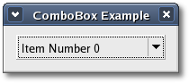
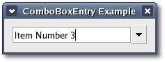

You can set or retrieve the active item in the ComboBox, either by
zero-based
index:
void set_active(int index);
int
get_active() const;
or by iterator:
void set_active_iter(const
Gtk::TreeIter& iter);
bool
get_active_iter(Gtk::TreeIter& iter) const;
If successful, get_active_iter() returns true to indicate that 'iter'
was set to point to the active item.
You can set the preferred number of columns when you want the popup to
be
laid out in a grid:
void
set_wrap_width(int width);
You can also set the number rows or columns an item should span by
calling
the following methods respectively:
void set_row_span_column(int row_span);
void
set_column_span_column(int
column_span);
Here is an example of how to use a Gtk::ComboBox:
#include
<xfc/gtk/cellrenderertext.hh>
#include <xfc/gtk/cellrendererpixbuf.hh>
#include <xfc/gtk/combobox.hh>
#include <xfc/gtk/liststore.hh>
Gtk::ListStore *store = new
Gtk::ListStore(2, GDK_TYPE_PIXBUF, G_TYPE_STRING);
Gtk::TreeIter iter = store->append();
store->set_value(iter, 0,
pixbuf1);
store->set_value(iter, 1, "First
Item");
iter = store->append();
store->set_value(iter, 0,
pixbuf2);
store->set_value(iter, 1, "Second
Item");
iter = store->append();
store->set_value(iter, 0,
pixbuf3);
store->set_value(iter, 1, "Third
Item");
Gtk::ComboBox *combo_box = new
Gtk::ComboBox(*store);
Gtk::CellRenderer *renderer = new
Gtk::CellRendererPixbuf;
combo_box->pack_start(*renderer, false);
combo_box->add_attribute(*renderer, "pixbuf", 0);
renderer = = new
Gtk::CellRendererText;
combo_box->pack_start(*renderer, true);
combo_box->add_attribute(*renderer, "text", 1);
ComboBoxText
ComboBoxText is a convenience class that creates a
text combo box, which is a ComboBox just displaying strings. You don't
have to worry about creating a model for this combo box. ComboBoxText
creates and manages a text model for you.
To create a ComboBoxText widget call the following constructor:
ComboBoxText();
then to add a string to the combo box list, just call one of the
following methods:
void append(const String& text);
void prepend(const String& text);
void insert(int position, const String& text);
The append() method adds the 'text' string to the end of the list,
prepend() adds the text string to the beginning of the list and
insert() adds the text string to the list at the specified position.
To remove a text string from the combo box list call the following
method:
void remove(int position);
The 'position' argument is the zero-based index of the text string in
the combo box list.
You would use ComboBoxText like this:
#include <xfc/gtk/combobox.hh>
Gtk::ComboBoxText *combo_box = new
Gtk::ComboBoxText;
combo_box->append("First Item");
combo_box->append("Second Item");
combo_box->append("Third Item");
ComboBox
Example
This example creates a combo box with a single list of text
strings. The header file is <combobox.hh>:
#include <xfc/main.hh>
#include <xfc/gtk/combobox.hh>
#include <xfc/gtk/window.hh>
#include <xfc/gtk/widgetsignals.hh>
using namespace
Xfc;
class Window : public Gtk::Window, protected Gtk::WidgetSignals
{
Gtk::ComboBoxText *combobox;
protected:
virtual bool
on_delete_event(const
Gdk::EventAny& event);
public:
Window();
virtual
~Window();
};
and the source file is <combobox.cc>:
#include "combobox.hh"
#include <xfc/gtk/box.hh>
#include <xfc/gtk/treemodel.hh>
#include <iostream>
Window::Window()
: Gtk::WidgetSignals(this)
{
set_title("ComboBox Example");
set_border_width(10);
Gtk::VBox *vbox = new Gtk::VBox;
add(*vbox);
//
A Gtk::ComboBoxText widget
combobox = new
Gtk::ComboBoxText;
for
(int i = 0; i < 6; i++)
{
String s = String::format("Item
Number %i", i);
combobox->append(s);
}
combobox->set_active(0);
vbox->add(*combobox);
vbox->show_all();
}
Window::~Window()
{
}
bool
Window::on_delete_event(const
Gdk::EventAny&)
{
Gtk::TreeIter iter;
if
(combobox->get_active_iter(iter))
{
String text;
combobox->get_model()->get_value(iter, 0,
text);
std::cout << "You selected:
" << text << std::endl;
}
return false;
}
int main (int argc, char *argv[])
{
using namespace
Main;
init(&argc, &argv);
Window window;
window.signal_destroy().connect(sigc::ptr_fun(&Xfc::Main::quit));
window.show();
run();
return
0;
}
Compiling ComboBox
If you compiled and installed XFC yourself, you will find the source
code for ComboBox in the
<examples/howto/combobox> source directory along with a Makefile. If
XFC came pre-installed, or you installed it from an RPM package, you
will
find the source code in the
</usr/share/doc/xfcui-X.X/examples/howto/combobox> subdirectory. In
this case you will have to create the Makefile yourself (replace X.X
with the
version number of the libXFCui library you have installed).
To create a Makefile for ComboBox, add the following lines to a new
text
file
and save it using the name "Makefile":
CC = g++
CFLAGS = -Wall -O2
comboboxtext: comboboxtext.cc comboboxtext.hh
$(CC) comboboxtext.cc -o comboboxtext $(CFLAGS)
`pkg-config xfcui-X.X --cflags --libs`
clean:
rm -f *.o comboboxtext
If you cut and paste these lines make sure the whitespace before $(CC)
and rm is a tab character. When you
compile and run this program you will see the following window appear:

Clicking on the combo box down arrow will pop up a list of
strings to choose from.
ComboBoxEntry
ComboBoxEntry is a widget with an editable
text entry field and a drop down list. To use a ComboBoxEntry you
create
a Gtk::TreeModel,
usually a Gtk::ListStore, and set it as the model used by the ComboBox.
You also need to set the text column, which is the column in the model
to get the strings from.
To create a ComboBoxEntry widget call one of the following
constructors:
ComboBoxEntry();
ComboBoxEntry(Gtk::TreeModel& model, int text_column);
The first constructor creates a ComboBoxEntry widget with no model. The
second
constructor creates a ComboBoxEntry widget initialized with the
specified 'model' and 'text_column'.
To set the model used by a ComboBoxEntry call the Gtk::ComboBox method:
void
set_model(Gtk::TreeModel& model);
and to set the text column call:
void set_text_column(int text_column);
The 'text_column' argument is the column in the model which the entry
box should use to get the strings from.
ComboBoxEntryText
ComboBoxEntryText is an editable text combo box, which is a
ComboBoxEntry just displaying strings. You don't have to worry about
creating a model for this combo box. ComboBoxEntryText creates and
manages a text model
for you.
To create a ComboBoxEntryText widget call the following constructor:
ComboBoxEntryText();
then to add a string to the combo box list just call one of the
following methods:
void append(const String& text);
void prepend(const String& text);
void insert(int position, const String& text);
To remove a text string from the combo box list call the following
method:
void remove(int position);
The 'position' argument is the zero-based index of the text string in
the combo box list.
ComboBoxEntry
Example
This example creates a combo box widget with a single list of text
strings that can be edited. The header file is
<comboboxentry.hh>:
#include <xfc/main.hh>
#include <xfc/gtk/comboboxentry.hh>
#include <xfc/gtk/liststore.hh>
#include <xfc/gtk/window.hh>
#include <xfc/gtk/widgetsignals.hh>
using namespace
Xfc;
/* ComboBoxEntry
*/
class
ComboBoxEntry : public
Gtk::ComboBoxEntryText
{
public:
ComboBoxEntry();
};
/* Window
*/
class Window : public Gtk::Window, protected Gtk::WidgetSignals
{
ComboBoxEntry *combobox;
protected:
virtual bool
on_delete_event(const
Gdk::EventAny& event);
public:
Window();
virtual
~Window();
};
and the source file is <comboboxentry.cc>:
#include "comboboxentry.hh"
#include <xfc/gtk/box.hh>
#include <iostream>
ComboBoxEntry::ComboBoxEntry()
{
set_text_column(0);
for (int i = 0; i < 6; i++)
{
String s = String::format("Item
Number %i", i);
append(s);
}
set_active(3);
}
Window::Window()
: Gtk::WidgetSignals(this)
{
set_title("ComboBoxEntry
Example");
set_border_width(10);
Gtk::VBox *vbox = new Gtk::VBox;
add(*vbox);
// A
Gtk::ComboBoxEntryText widget
combobox = new
ComboBoxEntry;
vbox->add(*combobox);
vbox->show_all();
}
Window::~Window()
{
}
bool
Window::on_delete_event(const
Gdk::EventAny&)
{
std::cout << "You entered: " <<
combobox->get_text() << std::endl;
return false;
}
int main (int argc, char *argv[])
{
using namespace
Main;
init(&argc, &argv);
Window window;
window.signal_destroy().connect(sigc::ptr_fun(&Xfc::Main::quit));
window.show();
run();
return
0;
}
Compiling ComboBoxEntry
If you compiled and installed XFC yourself, you will find the source
code for ComboBoxEntry in the
<examples/howto/combobox> source directory along with a Makefile. If
XFC came pre-installed, or you installed it from an RPM package, you
will
find the source code in the
</usr/share/doc/xfcui-X.X/examples/howto/combobox> subdirectory. In
this case you will have to create the Makefile yourself (replace X.X
with the
version number of the libXFCui library you have installed).
To create a Makefile for ComboBoxEntry, add the following lines to a
new text
file
and save it using the name "Makefile":
CC = g++
CFLAGS = -Wall -O2
comboboxentry: comboboxentry.cc comboboxentry.hh
$(CC) comboboxentry.cc -o comboboxentry $(CFLAGS)
`pkg-config xfcui-X.X --cflags --libs`
clean:
rm -f *.o comboboxentry
If you cut and paste these lines make sure the whitespace before $(CC)
and rm is a tab character. When
you
compile and run this program you will see the following window appear:

Clicking on the combo box down arrow will pop up a list of
strings to choose from. The selected string is editable and can be
retrieved when the combo box is destroyed.